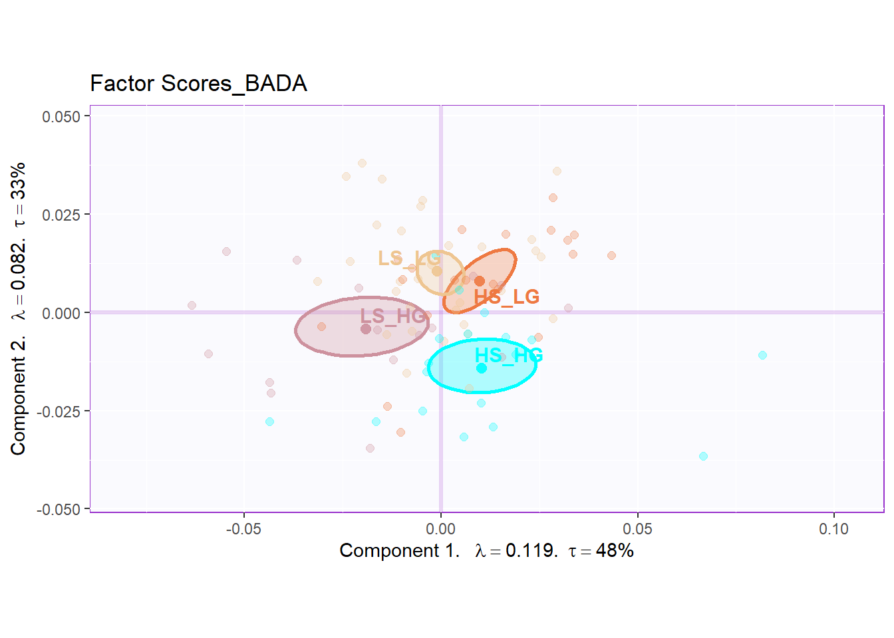
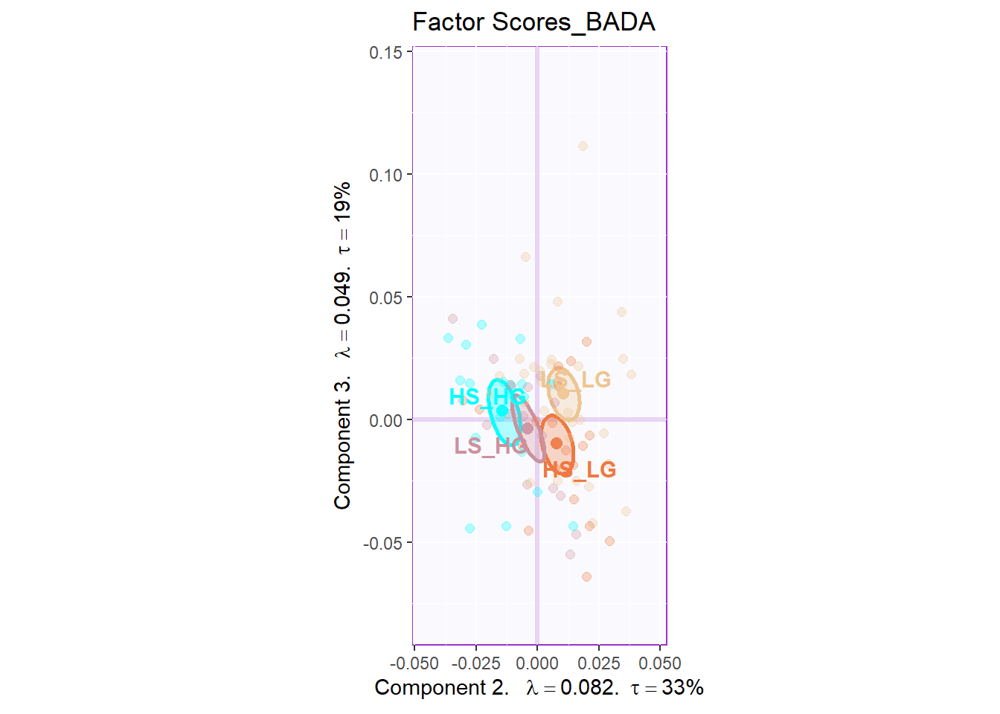
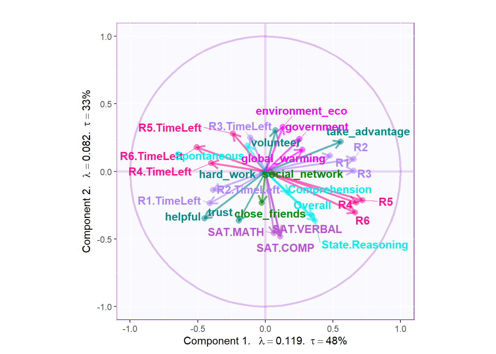
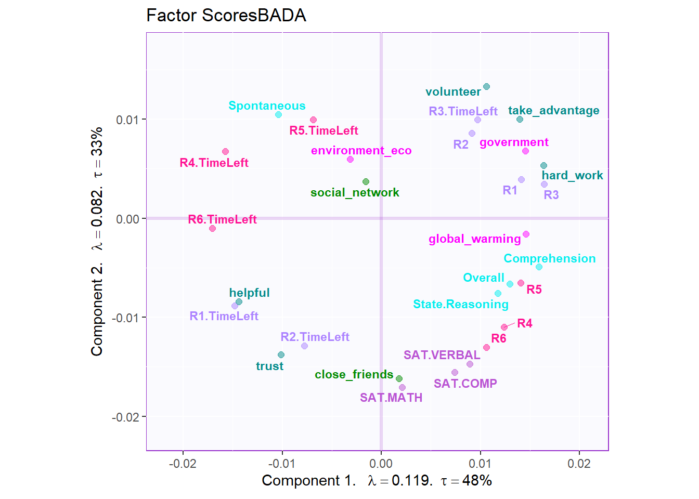

Chapter 7 Barycentric Discriminant Analysis
7.1 Introduction of BADA
The full name of BADA is Barycentric Discriminant Analysis. Basically, it is a discriminative analysis technique similar with DiCA. The main purpose of BADA is to maximize the discrepancy between groups and make best prediction based on the distance on factor scores. The unique advantage of BADA is that BADA performs well when the number of observation is smaller but the variables are big - the big data situation. However, in this chapter, we will only use the traditional side of the BADA - make prediction on high/low social intelligence and high/low general intelligence groups in our main data set. For more information about the data and experiment, please check data intro part3.1
7.2 Computation
The computational process is similar with all the analysis before. As usual, I will store all important matrices into work environment for plotting.
res.BADA <- tepBADA(DATA = exp.neg[7:35],
scale = 'SS1',
center = TRUE,
DESIGN = exp.neg$group,
graphs = FALSE)
res.BADA.inf <- tepBADA.inference.battery(DATA = exp.neg[7:35],
scale = 'SS1',
center = TRUE,
DESIGN = exp.neg$group,
graphs = FALSE)## [1] "It is estimated that your iterations will take 0.05 minutes."
## ===============================================================================eigs <- res.BADA$TExPosition.Data$eigs
tau <- res.BADA$TExPosition.Data$t
fm <- res.BADA$TExPosition.Data$fi
fj <- res.BADA$TExPosition.Data$fj
cj <- res.BADA$TExPosition.Data$cj
eigs.permu <- res.BADA.inf$Inference.Data$components$eigs.perm
p.vals <- res.BADA.inf$Inference.Data$components$p.vals
fii <- res.BADA$TExPosition.Data$fii
boot.ratios <- res.BADA.inf$Inference.Data$boot.data$fj.boot.data$tests$boot.ratios7.3 Heatmap
The heatmap is same with the DiCA one. I calculated the group mean for each variables and plot it with ‘pheatmap’.
# getmeans
raw.bada <- scale(exp.neg[7:35],
scale = TRUE,
center = TRUE)
tmp <- aggregate(raw.bada, list(exp.neg$group), mean)
mean.bada.raw <- tmp[,2:ncol(tmp)]
rownames(mean.bada.raw) <- tmp[,1]
bada.hm <- pheatmap(mat=mean.bada.raw,
fontsize_row =13,
fontsize =10,
cellheight = 10,
cellwidth = 10,
angle_col = 90,
cluster_rows = FALSE,
cluster_cols = FALSE)
bada.hm
7.4 Scree
The scree plot indicated that the first component explained nearly half of the variance and the second one explained nearly 30%. The permutation test results are insignificant, which means that the experimental observation may not as stable as we expect.
7.5 Factor Scores
Similar with PCA, the row factor scores gave back to me a clear separation among groups in first and second dimensions. However, the results from dimension 2 and 3 may not be very informative. As I can know that the first dimension is the most important contributor for group separation.


7.6 Loading
The loading part is interesting. From the column factor scores, we know that the first and second half of the collective game are separated by dimension2, which is fantastic. The dimension1 separates volunteer, take_advantage and hard_working with helpful and trust. The dominant variables in dimension 2 is SAT results. Not only the collective game performance, the time usage of first and second half of the game is separated by dimension2.


7.7 Confusion Matrix
The confusion matrix of BADA provide me the accuracy of its prediction on each group. Sadly, the results are not as good as DiCA, which is unexpected. The fixed confusion accuracy is 53% and he random confusion accuracy is 45%
# computation
fixed.confusion <- as.matrix(res.BADA.inf$Inference.Data$loo.data$fixed.confuse)
random.confusion <- as.matrix(res.BADA.inf$Inference.Data$loo.data$loo.confuse)
fixed.acc <- res.BADA.inf$Inference.Data$loo.data$fixed.acc
random.acc <- res.BADA.inf$Inference.Data$loo.data$loo.acc
# rename
rownames(fixed.confusion) <- sub("[[:punct:]]","",rownames(fixed.confusion))
rownames(random.confusion) <- sub("[[:punct:]]","",rownames(random.confusion))
colnames(fixed.confusion)<- sub("[[:punct:]]","",colnames(fixed.confusion))
colnames(random.confusion)<- sub("[[:punct:]]","",colnames(random.confusion))
rownames(fixed.confusion) <- paste0(rownames(fixed.confusion), ".predicted")
colnames(fixed.confusion) <- paste0(colnames(fixed.confusion), ".actual")
# print table and accurarcy
kable(fixed.confusion, caption = "Fixed Confustion Matrix")| LS_LG.actual | HS_LG.actual | LS_HG.actual | HS_HG.actual | |
|---|---|---|---|---|
| LS_LG.predicted | 22 | 6 | 6 | 6 |
| HS_LG.predicted | 8 | 11 | 3 | 4 |
| LS_HG.predicted | 0 | 1 | 6 | 2 |
| HS_HG.predicted | 1 | 2 | 1 | 7 |
## fixed accurarcy: 0.5348837| LS_LG.actual | HS_LG.actual | LS_HG.actual | HS_HG.actual | |
|---|---|---|---|---|
| LS_LG.predicted | 21 | 8 | 8 | 8 |
| HS_LG.predicted | 8 | 9 | 3 | 5 |
| LS_HG.predicted | 0 | 1 | 5 | 2 |
| HS_HG.predicted | 2 | 2 | 0 | 4 |
## random accurarcy: 0.45348847.8 Contribution and Bootstrap Ratio Barplot
The results of contribution barplots indicated that the collective game performance is negatively associated with the time usage of the game. The less usage of the time they used, the better teamwork they had during the experiment. The previous and current results all point out that the time usage is in same contribution direction with helpful and trust. From the dimension 1, we also found out that the attitude toward global environment is positively correlated with collective game performance. From the dimension 2, I can conclude that the second half of the game may more rely on team work since the close_friend and trust variables explained the most variance.
From BADA’s results, it looks like that I can say, the first half of the game (for the negative condition, they will have ample resource at the first half of the game but limited resource at the second half of the game), participants are more willing to working independently. However, in the second half of the game, they are more likely to have collective behaviors and teamwork. The results is consistent with research article.